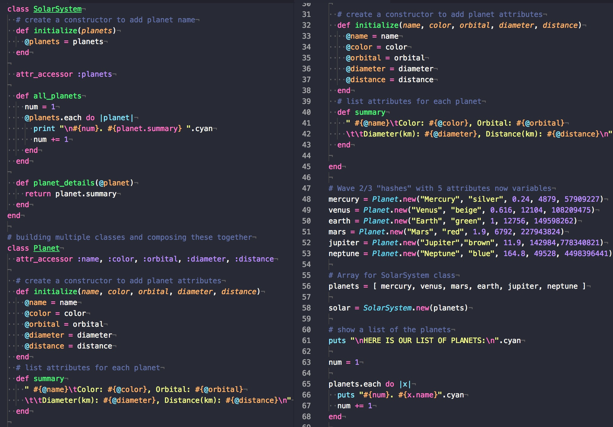
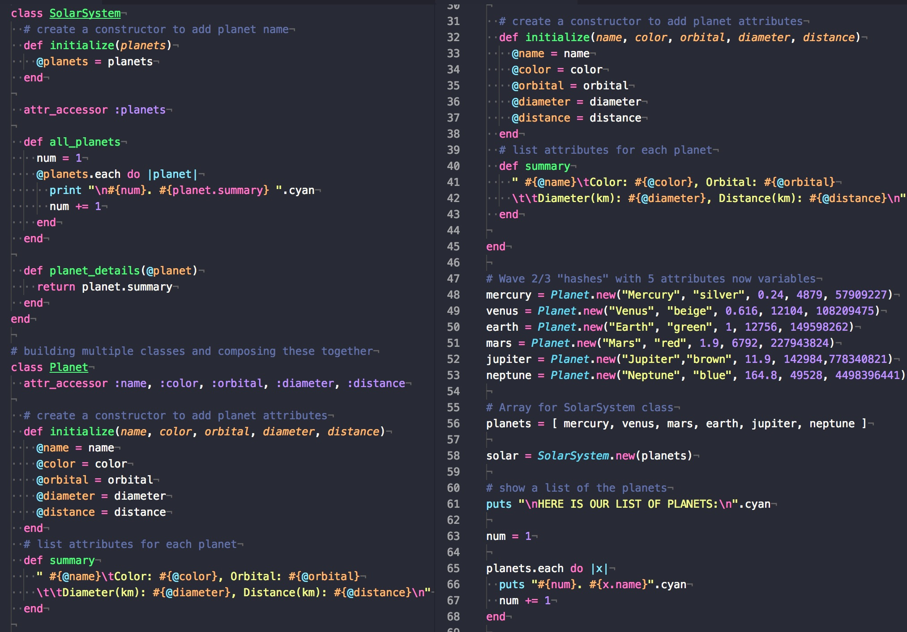

In this project, we created a system to track ride share data from a CSV file while using our knowledge of classes, methods and attributes to implement object-oriented design.
Learning Goals:- Creating and instantiation classes with attributes
- Creating class methods and instance methods
- Practice writing pseudocode
- Create tests to drive the creation of our code
Scrabble was our second pair-programming project, where we used test driven development to write tests and code in parallel. Project completed with Brandy Austin.
Learning Goals:- Utilize TDD (Test Driven Development)
- Create class methods according to requirements
- Utilize Single Responsibility Principle to reduce code dependencies
- Utilize composition between classes
 

Solar System, am individual-stage 1 project, uses classes instead of hard-coded data. The user can learn about any planet within the solar system and create new ones.
Learning Goals:- Practice creating custom classes
- Use a hash to initialize an object
- Create an object which contains a collection of other objects
- Practice creating instance methods
Calculator project was one of our first projects at Ada. An individual-stage 1 project, the program prompts the user for an operation and two numbers.
Learning Goals:- Practice writing code that has a user interface
- Utilize conditionals and regular expressions
- Testing code for incorrect input